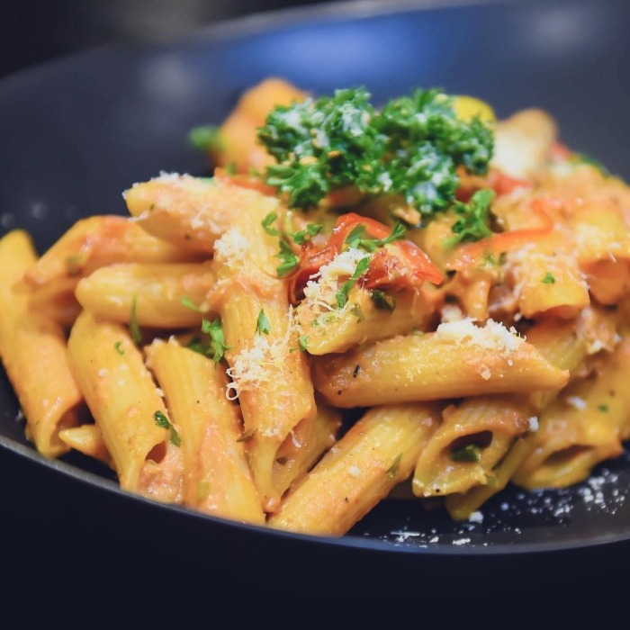

Good food. Already
in your kitchen.
Turn what you have into something delicious.

A little inspiration for today
Good meals start with what you have on hand.
Made for everyday cooking
Turn what you have into something delicious.

Good meals start with what you have on hand.